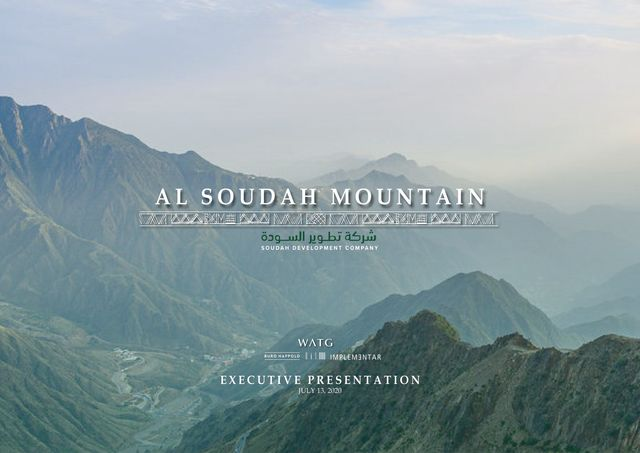
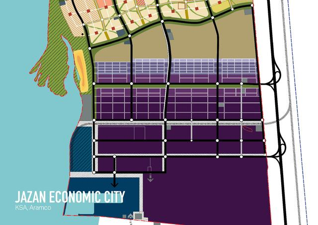
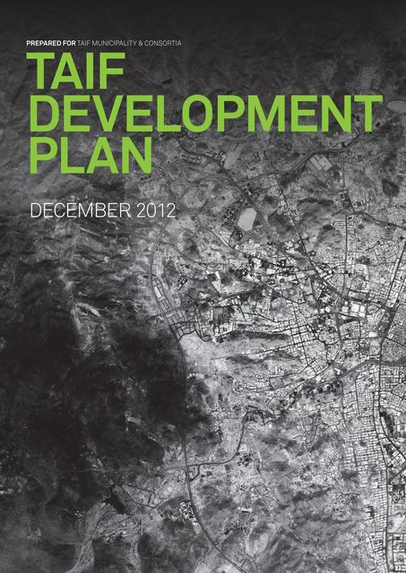

Prof. Dr. Amr Attia speaks at SHARE Kazakhstan in Almaty on 24 and 25 November. Read his profile
Prof. Dr. Amr Attia is Board Chairman of SHARE Egypt 2026, at the Grand Egyptian Museum on 13 and 14 December. News and events
Urban planning and master planning in Saudi Arabia
PUD has 55 projects in Saudi Arabia between 1994 and 2026, including Jabal Thabeer Park (Mina, Makkah), Kidana Al Khaif (Mina, Muzdalifah and Arafat) and AlUla Strategic Framework Plan. The work covers master plans, advisory roles and mixed-use developments.
Red Sea destinations · Urban planning in Saudi Arabia, explained
1990s6 projects
2000s1 project
2010s17 projects
2020s28 projects
Cities and regions
Jeddah 11Makkah 10Riyadh 9AlUla 7Madinah 7Jazan 2Red Sea coast 1Yanbu 1Najran 1Northern Borders 1Al Khafji 1Aseer 1Khaybar 1Empty Quarter 1Jabal Al Lith 1Dhahran 1Dammam 1Taif 1
All projects in Saudi Arabia
 Jabal Thabeer Park (Mina, Makkah)Mina, Makkah · 2025
Jabal Thabeer Park (Mina, Makkah)Mina, Makkah · 2025 Kidana Al Khaif (Mina, Muzdalifah and Arafat)Makkah (Mina, Muzdalifah, Arafat) · 2024-2026
Kidana Al Khaif (Mina, Muzdalifah and Arafat)Makkah (Mina, Muzdalifah, Arafat) · 2024-2026 AlUla Strategic Framework PlanAlUla · 2022
AlUla Strategic Framework PlanAlUla · 2022 Jorhum DestinationMakkah · 2026
Jorhum DestinationMakkah · 2026 Muzdalifah ParkMuzdalifah, Makkah · 2026
Muzdalifah ParkMuzdalifah, Makkah · 2026 Majar Al Kabsh Pre-Concept DesignMina, Makkah · 2025
Majar Al Kabsh Pre-Concept DesignMina, Makkah · 2025 Yanbu, Umluj, Al Wajh and Duba Sub-Regional Plan (YUWDDA)Yanbu, Umluj, Al Wajh and Duba (Red Sea coast) · 2025
Yanbu, Umluj, Al Wajh and Duba Sub-Regional Plan (YUWDDA)Yanbu, Umluj, Al Wajh and Duba (Red Sea coast) · 2025 Al Mashaaer Al Mugaddassah Master PlanMakkah (Mina, Muzdalifah, Arafat) · 2024-2025
Al Mashaaer Al Mugaddassah Master PlanMakkah (Mina, Muzdalifah, Arafat) · 2024-2025 Al Rabita Pre-Concept Design CompetitionMakkah · 2024
Al Rabita Pre-Concept Design CompetitionMakkah · 2024 Fawaz Alhokair Estate, RiyadhRiyadh · 2024
Fawaz Alhokair Estate, RiyadhRiyadh · 2024 Riyadh Plan: Stakeholder Engagement PlanRiyadh · 2024
Riyadh Plan: Stakeholder Engagement PlanRiyadh · 2024 Architectural Design Guidelines for Najran and the Northern Border RegionNajran and the Northern Border Region · 2022
Architectural Design Guidelines for Najran and the Northern Border RegionNajran and the Northern Border Region · 2022 NEOM Hospital Landscape Conceptual MasterplanTabuk (NEOM) · 2022-2023
NEOM Hospital Landscape Conceptual MasterplanTabuk (NEOM) · 2022-2023 Project Line Concept Master Plan (Al Khafji)Al Khafji · 2021
Project Line Concept Master Plan (Al Khafji)Al Khafji · 2021 Sharaan Nature Reserve Master PlanAlUla · 2021-2022
Sharaan Nature Reserve Master PlanAlUla · 2021-2022
Al Soudah Master Plan CompetitionAseer Region · 2020 Khaybar Heritage Area: Development Brief for the Master PlanKhaybar, AlUla · 2020
Khaybar Heritage Area: Development Brief for the Master PlanKhaybar, AlUla · 2020 Makkah Township Vision Master PlanMakkah · 2020
Makkah Township Vision Master PlanMakkah · 2020 Al Hamdaniyah Investment Lands Concept Master Plan, JeddahJeddah · 2019
Al Hamdaniyah Investment Lands Concept Master Plan, JeddahJeddah · 2019 AlUla County Infrastructure Master PlanAlUla · 2019-2020
AlUla County Infrastructure Master PlanAlUla · 2019-2020 King Abdulaziz Road Investment Land Concept Master Plan, DhahranDhahran · 2019
King Abdulaziz Road Investment Land Concept Master Plan, DhahranDhahran · 2019 Taj Al RiyadhRiyadh · 2018-2019
Taj Al RiyadhRiyadh · 2018-2019 Al Jawhara ResidenceJeddah · 2017-2018
Al Jawhara ResidenceJeddah · 2017-2018 Jazan City for Primary and Downstream IndustriesJazan · 2017-2018
Jazan City for Primary and Downstream IndustriesJazan · 2017-2018 Strategic Plan for the Optimisation of Saudi Railway Organization's Land and Property AssetsSaudi Arabia · 2017-2018
Strategic Plan for the Optimisation of Saudi Railway Organization's Land and Property AssetsSaudi Arabia · 2017-2018
Jazan Economic CityJazan · 2013-2016 Jeddah City: Regional, Strategic and Local PlansJeddah · 2013-2015
Jeddah City: Regional, Strategic and Local PlansJeddah · 2013-2015 Jeddah Spatial Framework PlanJeddah · 2012
Jeddah Spatial Framework PlanJeddah · 2012
Taif Development Plan (TDP)Taif · 2012 Palm Beach Resort Landscape DesignRiyadh · 2006
Palm Beach Resort Landscape DesignRiyadh · 2006 Al Hashimi, Al Kattan, Al Shirbini and Al Zahem Hotels and Residential ComplexesMadinah · 1998
Al Hashimi, Al Kattan, Al Shirbini and Al Zahem Hotels and Residential ComplexesMadinah · 1998 Fawaz Alhokair Diriyah Farm and CompoundRiyadhFawaz Alhokair Residence Extension, RiyadhRiyadh · 2024Al Faw Heritage Area Pre-Concept Master PlanRiyadh Region · 2020-2021Al Ras Al Abiyad Pre-Concept Master PlanMadinah Region · 2020-2021Black Pegasus Design CompetitionAlUla · 2020King Salman Bay Mixed Use DevelopmentJeddah · 2020Master Planning Advisory Services for the Royal Commission for AlUlaAlUla · 2020New Jeddah Downtown Master PlanJeddah · 2020-2021Project Elephant Pre-Concept Master PlanEmpty Quarter · 2020-2021Project Oval Design CompetitionJabal Al Lith · 2020Project Raha Water ParkJeddah · 2020-2021Royal Commission for AlUla Advisory ServicesAlUla · 2019Royal Commission for Makkah City and Holy Sites Advisory ServicesMakkah · 2019Planning Framework for Residential Density Improvement in Dammam, Riyadh and JeddahDammam, Riyadh and Jeddah · 2017-2018Rua Al Haram Concept Master Planning CompetitionMakkah · 2017Al-Rabwa Resettlement ProgrammeJeddah · 2013Jeddah Stormwater Drainage ProgrammeJeddah · 2011-2012Al Kattan Hotel, Commercial and Residential Complex (Concept Design)Madinah · 1995Al-Hashimi Hotel, Commercial and Residential Complex (Concept Design)Madinah · 1995Al-Shirbini Commercial and Residential Complex (Concept Design)Madinah · 1995Al-Zahem Hotel, Commercial and Residential Complex (Concept Design)Madinah · 1995Basharia Hotel, Commercial and Residential Complex (Concept Design)Madinah · 1994Saudi Import Company Headquarters, JeddahJeddahScience and Space Complex, RiyadhRiyadh
Fawaz Alhokair Diriyah Farm and CompoundRiyadhFawaz Alhokair Residence Extension, RiyadhRiyadh · 2024Al Faw Heritage Area Pre-Concept Master PlanRiyadh Region · 2020-2021Al Ras Al Abiyad Pre-Concept Master PlanMadinah Region · 2020-2021Black Pegasus Design CompetitionAlUla · 2020King Salman Bay Mixed Use DevelopmentJeddah · 2020Master Planning Advisory Services for the Royal Commission for AlUlaAlUla · 2020New Jeddah Downtown Master PlanJeddah · 2020-2021Project Elephant Pre-Concept Master PlanEmpty Quarter · 2020-2021Project Oval Design CompetitionJabal Al Lith · 2020Project Raha Water ParkJeddah · 2020-2021Royal Commission for AlUla Advisory ServicesAlUla · 2019Royal Commission for Makkah City and Holy Sites Advisory ServicesMakkah · 2019Planning Framework for Residential Density Improvement in Dammam, Riyadh and JeddahDammam, Riyadh and Jeddah · 2017-2018Rua Al Haram Concept Master Planning CompetitionMakkah · 2017Al-Rabwa Resettlement ProgrammeJeddah · 2013Jeddah Stormwater Drainage ProgrammeJeddah · 2011-2012Al Kattan Hotel, Commercial and Residential Complex (Concept Design)Madinah · 1995Al-Hashimi Hotel, Commercial and Residential Complex (Concept Design)Madinah · 1995Al-Shirbini Commercial and Residential Complex (Concept Design)Madinah · 1995Al-Zahem Hotel, Commercial and Residential Complex (Concept Design)Madinah · 1995Basharia Hotel, Commercial and Residential Complex (Concept Design)Madinah · 1994Saudi Import Company Headquarters, JeddahJeddahScience and Space Complex, RiyadhRiyadhQuestions people ask
Which cities in Saudi Arabia has PUD worked in?
PUD has worked in Jeddah, Makkah, Riyadh, AlUla, Madinah, Jazan, Red Sea coast, Yanbu, Najran, Northern Borders, Al Khafji and Aseer.